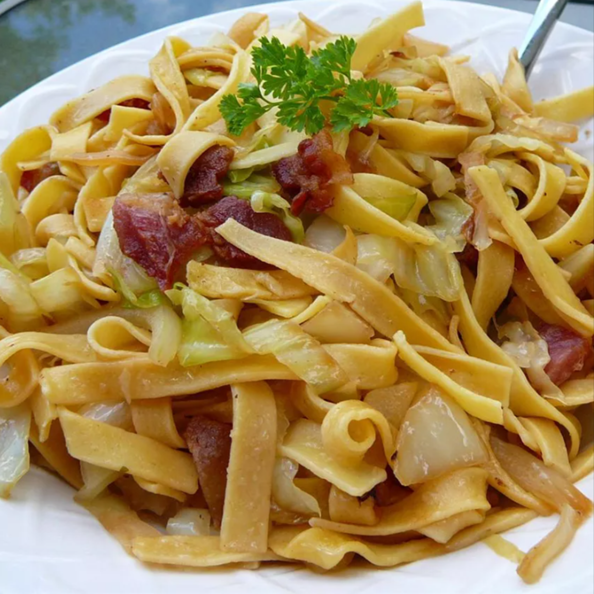

halushki Recipe

Polish dish combining bacon, fried cabbage and egg noodles.
Ingredients
- 1 pound bacon
- 1 onion, diced
- 1 (16 ounce) package egg noodles
- 1 head cabbage, sliced
- salt and ground black pepper to taste
Steps
- Shred cabbage and onions.
- Sauté in butter until tender.
- Add cooked egg noodles.
- Season with salt and pepper.
- Quick and delicious halushki ready to serve.